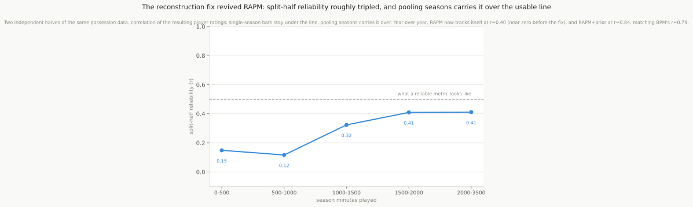

Why RAPM is hard, and how we got it working
Draft
This is a methods companion for the one impact metric this report builds from scratch: RAPM (Regularized Adjusted Plus/Minus). RAPM is the backbone of every serious impact metric (EPM, LEBRON, RAPTOR, RPM), and it is genuinely hard to compute well. Ours started out as noise, and fixing it turned out to be a story about data plumbing more than statistics. This note explains why RAPM is hard, what specifically broke, how we measured whether it was working, and what the numbers mean.
What RAPM is trying to do
Every time a lineup is on the floor, the offense either outscores or gets outscored per possession. RAPM takes millions of these possessions across a season and works backward to answer: how much did each individual player add or subtract, once you account for the four teammates and five opponents sharing the floor with him? It never looks at the box score. It only knows who was out there and what the scoreboard did.
Mechanically it is one big ridge regression: a row per possession, a column per player (offense and defense), and a penalty term that keeps the estimates from running wild. The penalty is why it is Regularized APM: raw APM (no penalty) is hopelessly noisy.
Why it is hard
Three problems make RAPM far harder than a box-score metric like PER.
1. Collinearity: players who always play together are hard to tell apart. If two starters share almost every possession, the regression cannot cleanly separate their individual contributions. It sees the pair’s combined effect and has to guess how to split it. This is the central statistical difficulty, and it is why RAPM needs so much data: only when players appear in many different lineup combinations can the model tease their effects apart.
2. Sparsity: one season is not enough. A single season gives each player a few thousand possessions, mostly in a handful of recurring lineups. That is too little to overcome the collinearity, so single-season RAPM swings wildly, and bench players in a few lucky lineups can rate near the top. Serious metrics fix this two ways: pool several seasons of possessions, and shrink each player toward a prior, a box-score estimate of his value that steadies the noisy lineup signal. A player with 3,000 possessions moves toward what the data shows; a player with 400 barely moves off his prior.
3. The data itself has to be reconstructed, and that is where we lost. The NBA does not hand you “who was on the floor for this possession.” You rebuild it from the play-by-play feed: start each period from the box-score starters, then apply every substitution event to track the five-man lineups through the game. This reconstruction is fiddly and error-prone, and it was the real reason our RAPM was noise. Two bugs, both silent:
- Substitution names. Incoming players are named in free text (“SUB: F. Wagner FOR Black”), matched against a roster by family name. Accents (
Pöltl), disambiguation initials (F./M. Wagner, two brothers with the same surname), and suffixes (Nance Jr.) all failed to match about 4% of the time. Each miss quietly dropped a player from the tracked lineup. - Whole-game discards. Worse, whenever a period’s bookkeeping could not be reconciled back to five-on-five, the code threw out the entire game. One mis-tracked substitution in one quarter deleted a full game of otherwise-clean possessions. About 60% of games with complete play-by-play were being discarded this way.
We fixed the name matching (normalize accents/initials/suffixes, disambiguate same-surname players by who is currently off the floor), stopped discarding whole games (keep the valid five-on-five possessions and skip only the corrupt stretch), and replaced an arbitrary lineup-repair rule with one that evicts the player who has gone longest without a play. That recovered games from ~470-500 per season to ~1,230, roughly 2.5x the data.
How we know it is working: split-half reliability
The hard question is not “did it produce numbers” but “do the numbers measure anything real.” The clean test is split-half reliability:
- Randomly split the possessions into two halves.
- Compute RAPM independently on each half.
- Correlate the two resulting sets of player ratings.
If RAPM is measuring a real, stable player quality, the two halves should agree: a genuinely good player looks good in both. If it is noise, the two halves disagree, because each is fitting its own random lineup luck. The correlation between the halves is the reliability. It is the same idea as handing two graders the same essays and seeing whether their scores line up.
A related check is year-over-year stability: correlate a player’s rating this season with last season. A real skill measure is fairly stable from one year to the next.
For reference, our BPM (a box-score metric) has year-over-year stability around 0.79. Two independent halves or two adjacent seasons of a metric that works land in roughly the 0.5-0.8 range.
The 0.5 boundary
Reliability runs from 0 (pure noise, the two measurements are unrelated) to 1 (perfect, they agree exactly). The reliability is itself the share of the spread across players that reflects real differences rather than noise: 0.5 means about half of what separates players is real and half is the luck of which lineups they happened to share, 0.7 means about 70% is real. (This is the definition of reliability in classical test theory, not the squared correlation; do not square it.) Below ~0.5 a metric is dominated by noise and is not trustworthy for ranking individual players; ~0.5-0.7 is the range where a single-number rating becomes genuinely useful, and it is about where the best public impact metrics live. So 0.5 is a rough usability line, not a magic threshold: cross it and the metric is telling you more about the player than about the randomness of his schedule.
One technical note. Split-half uses only half the data for each estimate, which understates the reliability of the full metric. The Spearman-Brown formula corrects for this: full-data reliability ≈ 2r / (1 + r), where r is the split-half correlation. A split-half of 0.33 corresponds to a full-data reliability near 0.48.
Where we landed, and how many seasons it takes
Before the fixes, bare RAPM had a split-half reliability around 0.10 at every minute level, even for 2,000-minute players. That is noise: two halves of the data barely agreed. After recovering the discarded games and repairing the lineup tracking, and pooling multiple seasons, the picture is very different:

| Pooled seasons | Split-half | Full-data reliability (Spearman-Brown) |
|---|---|---|
| 3 | 0.32 | ~0.48 |
| 4 | 0.36 | ~0.53 |
| 5 | 0.43 | ~0.60 |
So the honest answer to “how many years do you need for a stable RAPM” is about four pooled seasons to clear the usable ~0.5 line, and five to reach ~0.60, and the prior-informed version (RAPM shrunk toward BPM) is steadier still, because the box-score prior absorbs the residual lineup noise. The single-season version stays noisy, which is exactly why every published metric pools years and leans on a prior.
The lesson worth keeping: the thing that turned our RAPM from noise into a usable metric was not a cleverer estimator. It was fixing the data pipeline that was silently throwing away 60% of the games.